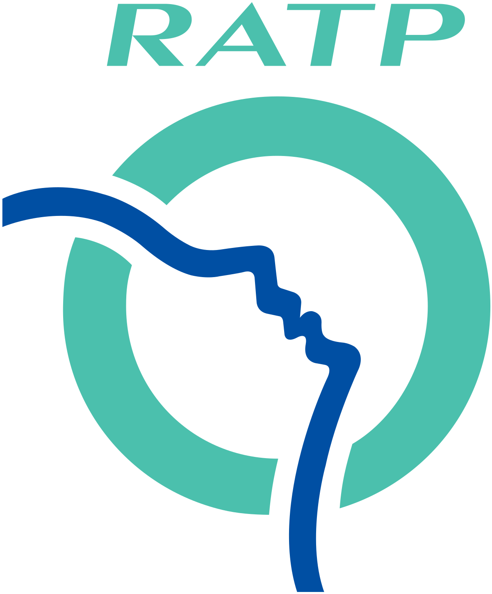

Je m'appelle Pierre Renaudin, j'ai 24ans. Je suis étudiant en école de commerce à l'IMT-BS.
Je suis titulaire de deux DUT : Réseaux et Télécommunications et Techniques (R&T) de Commercialisation (TC). J'ai ensuite décide de faire une école de commerce.
J'ai choisi de faire cette dernière année en alternance et plus particulièrement dans le domaine du marketing digital.
J'effectue mon alternance à la RATP, je suis assistant chef de projet marketing. Mes missions consistent à piloter des projets autour des services à proposer aux voyageurs des lignes RATP.
J'adore faire du sport, je pratique le streetworkout depuis maintenant 5 ans. J'ai aussi fait plusieurs autres sports en club comme du tennis, du football et de la boxe.
J'aime aussi beaucoup jouer et écouter la musique. J'apprends la guitare et la piano en autodidacte.